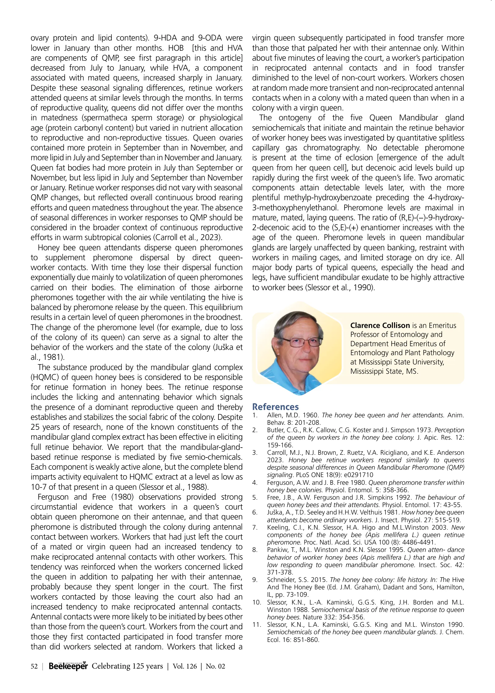

Clarence Collison is an Emeritus
Professor of Entomology and
Department Head Emeritus of
Entomology and Plant Pathology
at Mississippi State University,
Mississippi State, MS.
References
1.
Allen, M.D. 1960. The honey bee queen and her attendants. Anim.
Behav. 8: 201-208.
2.
Butler, C.G., R.K. Callow, C.G. Koster and J. Simpson 1973. Perception
of the queen by workers in the honey bee colony. J. Apic. Res. 12:
159-166.
3.
Carroll, M.J., N.J. Brown, Z. Ruetz, V.A. Ricigliano, and K.E. Anderson
2023. Honey bee retinue workers respond similarly to queens
despite seasonal differences in Queen Mandibular Pheromone (QMP)
signaling. PLoS ONE 18(9): e0291710
4.
Ferguson, A.W. and J. B. Free 1980. Queen pheromone transfer within
honey bee colonies. Physiol. Entomol. 5: 358-366.
5.
Free, J.B., A.W. Ferguson and J.R. Simpkins 1992. The behaviour of
queen honey bees and their attendants. Physiol. Entomol. 17: 43-55.
6.
Juška, A., T.D. Seeley and H.H.W. Velthuis 1981. How honey bee queen
attendants become ordinary workers. J. Insect. Physiol. 27: 515-519.
7.
Keeling, C.I., K.N. Slessor, H.A. Higo and M.L.Winston 2003. New
components of the honey bee (Apis mellifera L.) queen retinue
pheromone. Proc. Natl. Acad. Sci. USA 100 (8): 4486-4491.
8.
Pankiw, T., M.L. Winston and K.N. Slessor 1995. Queen atten- dance
behavior of worker honey bees (Apis mellifera L.) that are high and
low responding to queen mandibular pheromone. Insect. Soc. 42:
371-378.
9.
Schneider, S.S. 2015. The honey bee colony: life history. In: The Hive
And The Honey Bee (Ed. J.M. Graham), Dadant and Sons, Hamilton,
IL, pp. 73-109.
10. Slessor, K.N., L.-A. Kaminski, G.G.S. King, J.H. Borden and M.L.
Winston 1988. Semiochemical basis of the retinue response to queen
honey bees. Nature 332: 354-356.
11. Slessor, K.N., L.A. Kaminski, G.G.S. King and M.L. Winston 1990.
Semiochemicals of the honey bee queen mandibular glands. J. Chem.
Ecol. 16: 851-860.
ovary protein and lipid contents). 9-HDA and 9-ODA were
lower in January than other months. HOB [this and HVA
are compenents of QMP, see first paragraph in this article]
decreased from July to January, while HVA, a component
associated with mated queens, increased sharply in January.
Despite these seasonal signaling differences, retinue workers
attended queens at similar levels through the months. In terms
of reproductive quality, queens did not differ over the months
in matedness (spermatheca sperm storage) or physiological
age (protein carbonyl content) but varied in nutrient allocation
to reproductive and non-reproductive tissues. Queen ovaries
contained more protein in September than in November, and
more lipid in July and September than in November and January.
Queen fat bodies had more protein in July than September or
November, but less lipid in July and September than November
or January. Retinue worker responses did not vary with seasonal
QMP changes, but reflected overall continuous brood rearing
efforts and queen matedness throughout the year. The absence
of seasonal differences in worker responses to QMP should be
considered in the broader context of continuous reproductive
efforts in warm subtropical colonies (Carroll et al., 2023).
Honey bee queen attendants disperse queen pheromones
to supplement pheromone dispersal by direct queen-
worker contacts. With time they lose their dispersal function
exponentially due mainly to volatilization of queen pheromones
carried on their bodies. The elimination of those airborne
pheromones together with the air while ventilating the hive is
balanced by pheromone release by the queen. This equilibrium
results in a certain level of queen pheromones in the broodnest.
The change of the pheromone level (for example, due to loss
of the colony of its queen) can serve as a signal to alter the
behavior of the workers and the state of the colony (Juška et
al., 1981).
The substance produced by the mandibular gland complex
(HQMC) of queen honey bees is considered to be responsible
for retinue formation in honey bees. The retinue response
includes the licking and antennating behavior which signals
the presence of a dominant reproductive queen and thereby
establishes and stabilizes the social fabric of the colony. Despite
25 years of research, none of the known constituents of the
mandibular gland complex extract has been effective in eliciting
full retinue behavior. We report that the mandibular-gland-
based retinue response is mediated by five semio-chemicals.
Each component is weakly active alone, but the complete blend
imparts activity equivalent to HQMC extract at a level as low as
10-7 of that present in a queen (Slessor et al., 1988).
Ferguson and Free (1980) observations provided strong
circumstantial evidence that workers in a queen’s court
obtain queen pheromone on their antennae, and that queen
pheromone is distributed through the colony during antennal
contact between workers. Workers that had just left the court
of a mated or virgin queen had an increased tendency to
make reciprocated antennal contacts with other workers. This
tendency was reinforced when the workers concerned licked
the queen in addition to palpating her with their antennae,
probably because they spent longer in the court. The first
workers contacted by those leaving the court also had an
increased tendency to make reciprocated antennal contacts.
Antennal contacts were more likely to be initiated by bees other
than those from the queen’s court. Workers from the court and
those they first contacted participated in food transfer more
than did workers selected at random. Workers that licked a
virgin queen subsequently participated in food transfer more
than those that palpated her with their antennae only. Within
about five minutes of leaving the court, a worker’s participation
in reciprocated antennal contacts and in food transfer
diminished to the level of non-court workers. Workers chosen
at random made more transient and non-reciprocated antennal
contacts when in a colony with a mated queen than when in a
colony with a virgin queen.
The ontogeny of the five Queen Mandibular gland
semiochemicals that initiate and maintain the retinue behavior
of worker honey bees was investigated by quantitative splitless
capillary gas chromatography. No detectable pheromone
is present at the time of eclosion [emergence of the adult
queen from her queen cell], but decenoic acid levels build up
rapidly during the first week of the queen’s life. Two aromatic
components attain detectable levels later, with the more
plentiful methylp-hydroxybenzoate preceding the 4-hydroxy-
3-methoxyphenylethanol. Pheromone levels are maximal in
mature, mated, laying queens. The ratio of (R,E)-(−)-9-hydroxy-
2-decenoic acid to the (S,E)-(+) enantiomer increases with the
age of the queen. Pheromone levels in queen mandibular
glands are largely unaffected by queen banking, restraint with
workers in mailing cages, and limited storage on dry ice. All
major body parts of typical queens, especially the head and
legs, have sufficient mandibular exudate to be highly attractive
to worker bees (Slessor et al., 1990).
52 |
Celebrating 125 years | Vol. 126 | No. 02